So far, we have generally been learning about methods of visualization for single variables.
However, there are often situations in which the questions we are asking involve the association of variables.
For instance, what if I wanted to visually assess the association between Major League Baseball (MLB) team runs scored and homeruns hit during the 2022 regular season?
Nothing we have learned so far can do this in an effective way.
Instead, a tool called a scatterplot would be more effective.
6.2 Communicating Association Between Quantitative Variables with a Scatterplot
A scatterplot, in general, is a visualization which exists on a Cartesian plane, like what we learned about back in high school algebra. It has an \(x\) and \(y\) axis which represent numeric variables.
It is common to plot individual points, which contain quantitative \(x\) and \(y\) coordinates, upon this plane. In the above baseball example, runs scored and homeruns hit are both quantitative attributes of an MLB team during a given season that we could easily plot upon the aforementioned plane.
With this visualization, we can get a sense of the relationship or association which may exist between the two quantitative variables we are interested in!
Let’s take a look at our own example!
Of course, we must first get our data into the right format prior to visualization:
Now, we can use our old friend geom_point to help us create the scatterplot!
mlb |>ggplot(aes(x=R,y=HR)) +geom_point() +labs(x="Team Runs Scored",y="Team Homeruns Hit",title="Association Between Homeruns Hit and Runs Scored by MLB Team",subtitle="2022 Regular Season") +theme_classic()
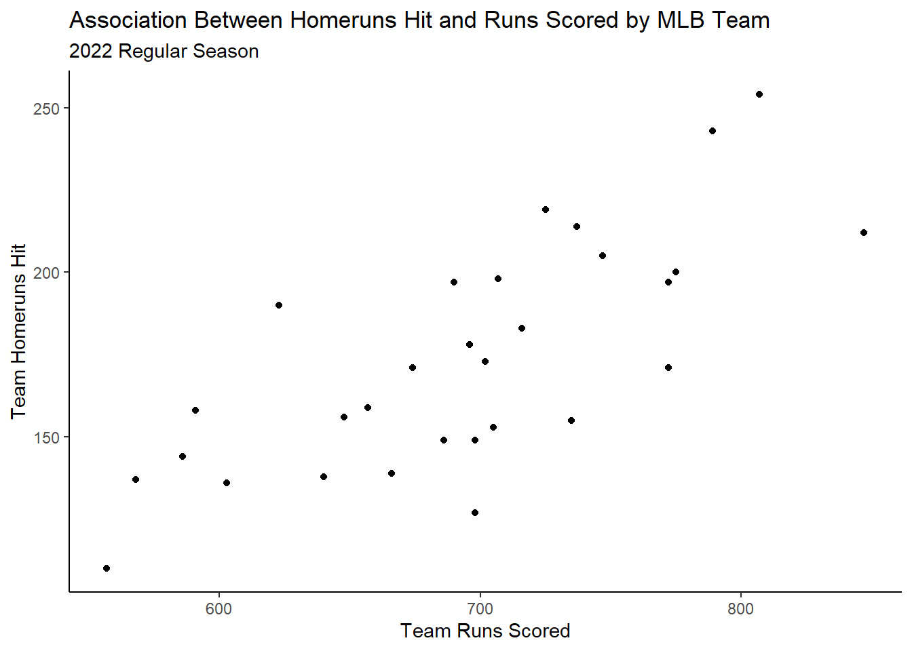
6.2.1 Interpreting a Scatterplot
Okay great! We probably know how to generally interpret a scatterplot. Here, it seems as the number of runs scored increases, intutitively homeruns hit also increases.
But we can be a little bit more specific in our interpretations of a scatterplot by answering the below questions:
What is the direction of the relationship?
What is the form of the relationship?
What is the strength of the form of the relationship?
What unusual characteristics are exhibited?
Let’s talk more specifically about how to answer these questions.
6.2.1.1 Scatterplots: Direction
“Direction” refers to how the points “move” together. If as the values on the x-axis increase, the values on the y-axis also increase, meaning that we have a general upward direction moving left to right across the graph, then we say the direction is “positive”.
If, as the values on the x-axis increase, the values on the y-axis decrease, meaning that we have a general downward direction moving left to right across the graph, then we say the direction is “negative”.
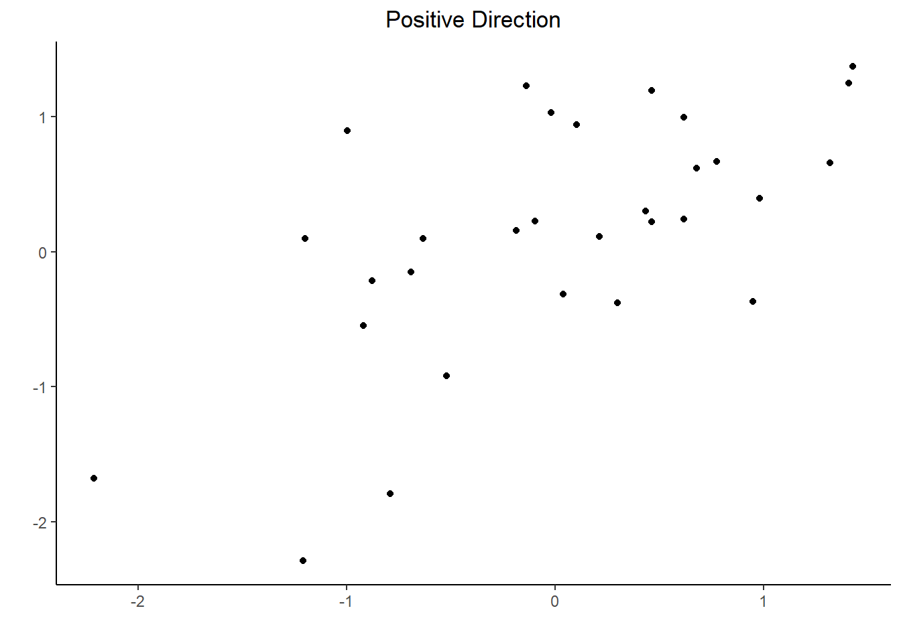
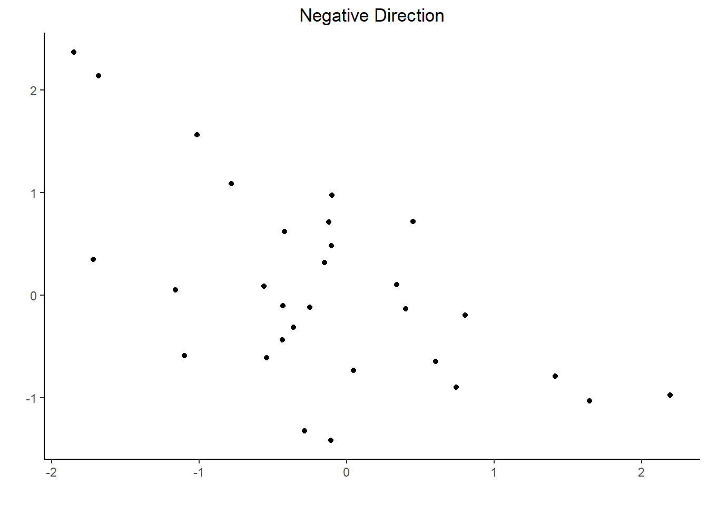
6.2.1.2 Scatterplots: Form
When we talk about the “form” of the relationship, we are referring to the general pattern the points follow.
For me, I usually refer to two main “forms”: Linear and Non-Linear
From: Statistics for Managers Using Microsoft® Excel 4th Edition, 2004 Prentice-Hall, c/o Dr. Taasoobshirazi
6.2.1.3 Scatterplots: Strength
What we’re talking about with “strength” is how close the points fall to the general form of the relationship identified in the prior question.
We can use adjectives like “weak”, “moderate”, and “strong” to describe the strength.
From: Statistics for Managers Using Microsoft® Excel 4th Edition, 2004 Prentice-Hall, c/o Dr. Taasoobshirazi
6.2.1.4 Scatterplots: Unusual Characteristics
What we mean by unusual characteristics is really anything that just visually appears odd.
Generally these are things like clusters or outliers, but could be anything that seems unusual with respect to traditional forms of scatterplots like those we’ve seen so far.
Let’s look at a clustering example using the palmerpenguins::penguins data and an outlier example using the MASS::Boston data.
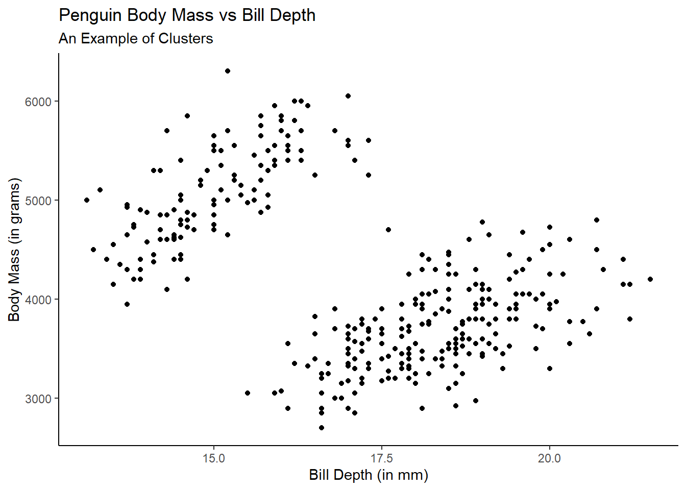
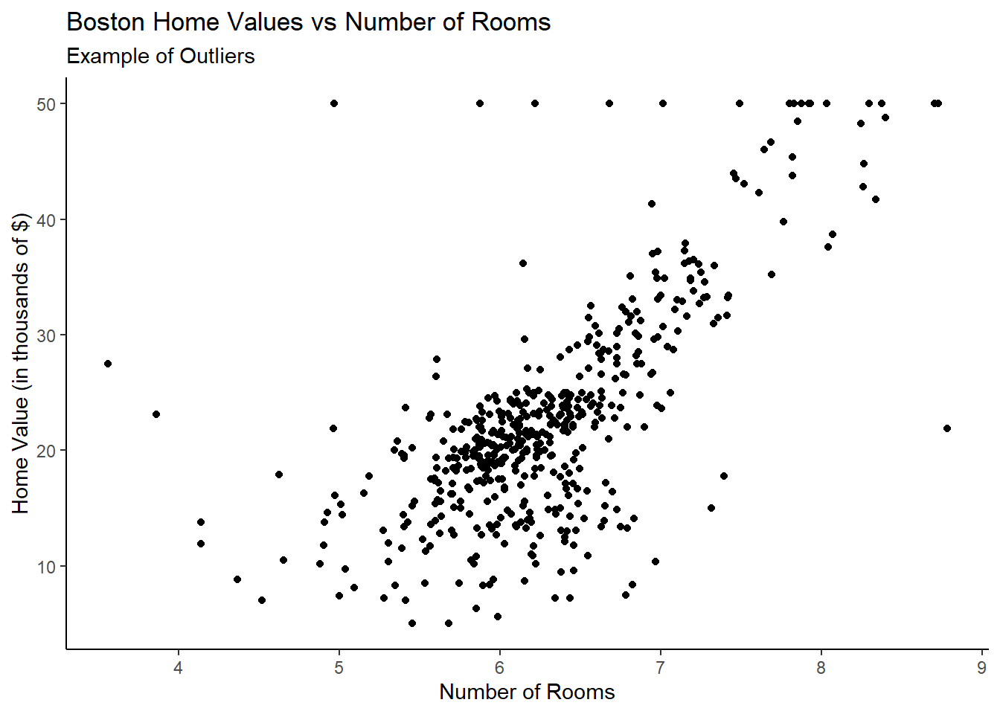
Now, with all of this in mind, we can reconsider our baseball example from before!
If I were to interpret this scatterplot, I would say we have evidence for a:
Positive,
Linear relationship between runs scored and homeruns hit of,
Moderate strength with,
No clear unusual characteristics.
Obviously there is a good deal of subjectivity in these interpretations and context is just as important!
6.2.2 Adding a Regression Line and Equation to a Scatterplot
Very commonly when we are generating scatterplots, it is often of interest to us to determine an equation for a line which best explains the relationship we are visually interpreting. - This “line” is called a “simple linear regression (SLR)” line.
How can we include this line and the equation itself on our plots? We can do so with the help of geom_smooth:
mlb |>ggplot(aes(x=R,y=HR)) +geom_point() +geom_smooth(method='lm',se=F) +labs(x="Team Runs Scored",y="Team Homeruns Hit",title="Association Between Homeruns Hit and Runs Scored by MLB Team",subtitle="2022 Regular Season") +theme_classic()
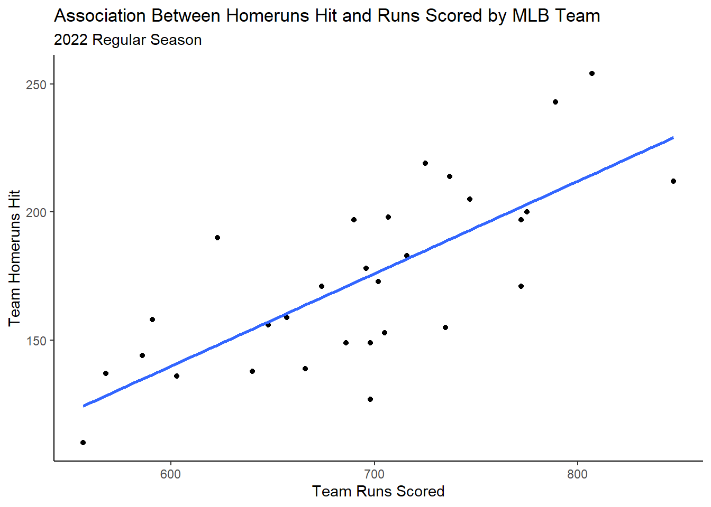
In the code, notice we added geom_smooth which allows us to visualize lines or curves around data points. Note, method='lm' refers to the line to be fit, which is a linear model in this case. Further, se=F means that we don’t want the standard errors of the line to be rendered on the visualization.
Okay this looks great! But now how do we get the equation of that line to also render on the graph?
Here, we can use a nice function called stat_regline_equation which is part of the helper package ggpubr
library(ggpubr)mlb |>ggplot(aes(x=R,y=HR)) +geom_point() +geom_smooth(method='lm',se=F) +stat_regline_equation(label.x =625, label.y =225) +labs(x="Team Runs Scored",y="Team Homeruns Hit",title="Association Between Homeruns Hit and Runs Scored by MLB Team",subtitle="2022 Regular Season") +theme_classic()
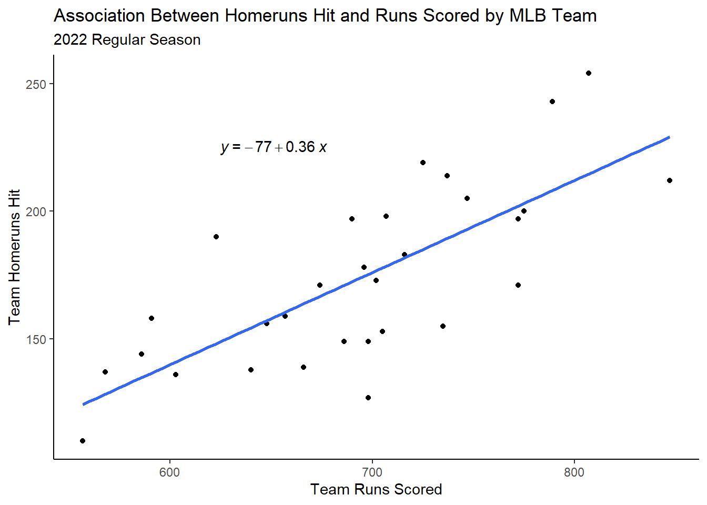
Notice that the label.x and label.y arguments control the position of the regression equation.
And just like we did previously with text labels/annotations, we can also control their size and color.
6.2.3 Faceting Scatterplots
Obviously with the Lahman baseball data, there are lots of different ways that we can slice the data to answer different questions.
For instance, in the prior visualization, we observed the relationship between homeruns hit and runs scored for a single, static season.
What if we wanted to see how that relationship changed from say, 2019 to 2022?
We can use either facet_wrap or facet_grid to help us here!
First, and as usual, let’s get our data into the right format:
Now we can use our same code from before to build a base plot, but then add a faceting function to it to create individual visualizations for each year!
## Facet Grid ##mlb2 |>ggplot(aes(x=R,y=HR)) +geom_point() +facet_grid(~yearID) +labs(x="Team Runs Scored",y="Team Homeruns Hit",title="Association Between Homeruns Hit and Runs Scored by MLB Team",subtitle="2019 - 2022 Regular Seasons") +theme_bw()
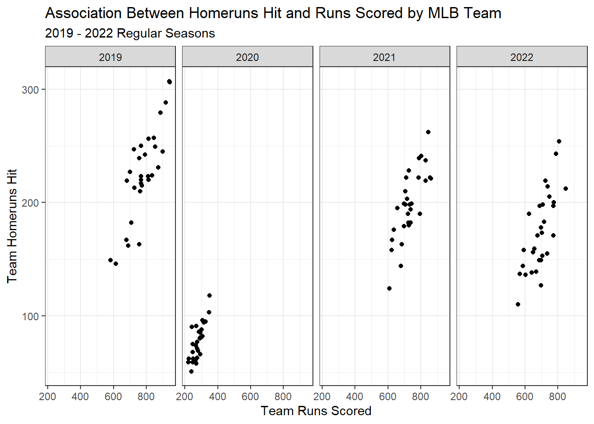
We can also add regression lines to our facets as well!
mlb2 |>ggplot(aes(x=R,y=HR,color=factor(yearID))) +geom_point() +geom_smooth(method ='lm',se = F) +facet_grid(~yearID) +stat_regline_equation(label.y=300) +labs(x="Team Runs Scored",y="Team Homeruns Hit",title="Association Between Homeruns Hit and Runs Scored by MLB Team",subtitle="2019 - 2022 Regular Seasons") +theme_bw() +theme(legend.position ='none')
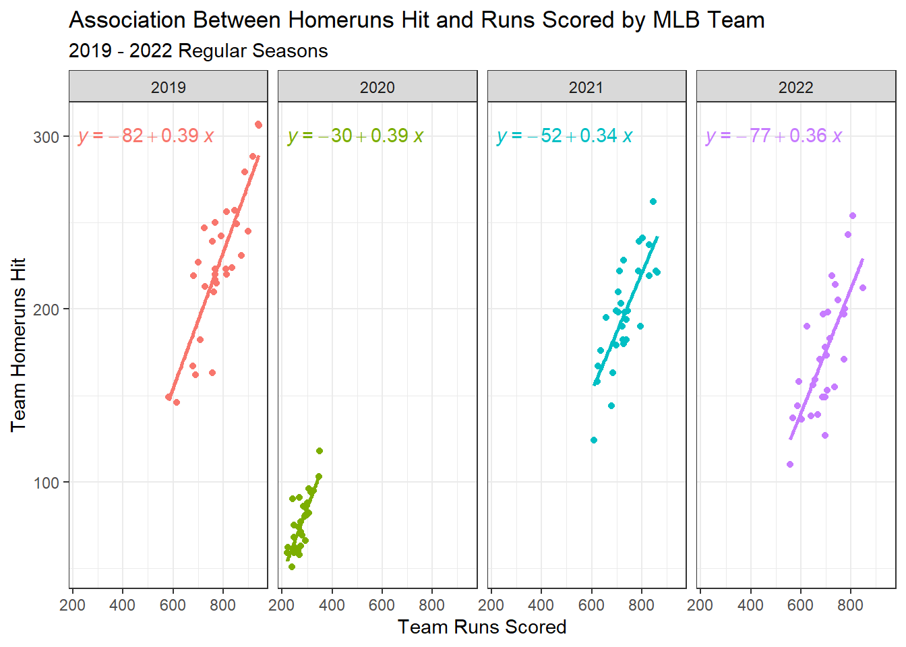
6.3 Communicating Association Between Categorical Variables with Bar Charts
While using a scatterplot for communicating association between two quantitative variables is a very effective tool for that purpose, the scatterplot is not at all effective for doing so using two categorical variables.
As you can imagine, there are lots of instances where communicating the association or relationship between two categorical variables is useful!
For example, in the ggplot2::diamonds dataset, we have information about the characteristics of over 50,000 round cut diamonds including quality of the cut (cut) and the quality of the color (color). Both of these variables are categorical variables as they include qualitative ratings.
Suppose I’m interested in understanding what the relationship between cut and color may be! As always, we must first start with a little data wrangling to ensure our data are in the right format.
In this case, I’m going to essentially be creating a cross-tabular table, where I count the frequency of each cell combination. Let me show you what I mean by that using the below code:
# A tibble: 35 × 3
# Groups: cut, color [35]
cut color n
<ord> <ord> <int>
1 Fair D 163
2 Fair E 224
3 Fair F 312
4 Fair G 314
5 Fair H 303
6 Fair I 175
7 Fair J 119
8 Good D 662
9 Good E 933
10 Good F 909
# ℹ 25 more rows
As you can see, for each unique value of cut, there is a corresponding value of color, and the number of times that combination of cut and color was observed in the diamonds dataset.
To visualize, we can use variations of our old friend the bar chart!
6.3.1 Creating a Grouped Bar Chart
One way we can visualize the association between categorical variables is through the use of a grouped bar chart. To generate this with ggplot2, we essentially only have to specify a grouping variable using an aesthetic like fill and then specify that we want a grouped bar chart within the geom_bar function.
Let’s check it out:
diamonds_df |>ggplot(aes(x = color, y = n, fill = cut)) +geom_bar(stat ='identity', position =position_dodge()) +labs(x ="Diamond Color Classification\n(from best (D) to worst (J))",y ="Frequency",fill ="Diamond Cut\nClassification",title ="Relationship Between Diamond Cut and Color") +theme_classic()
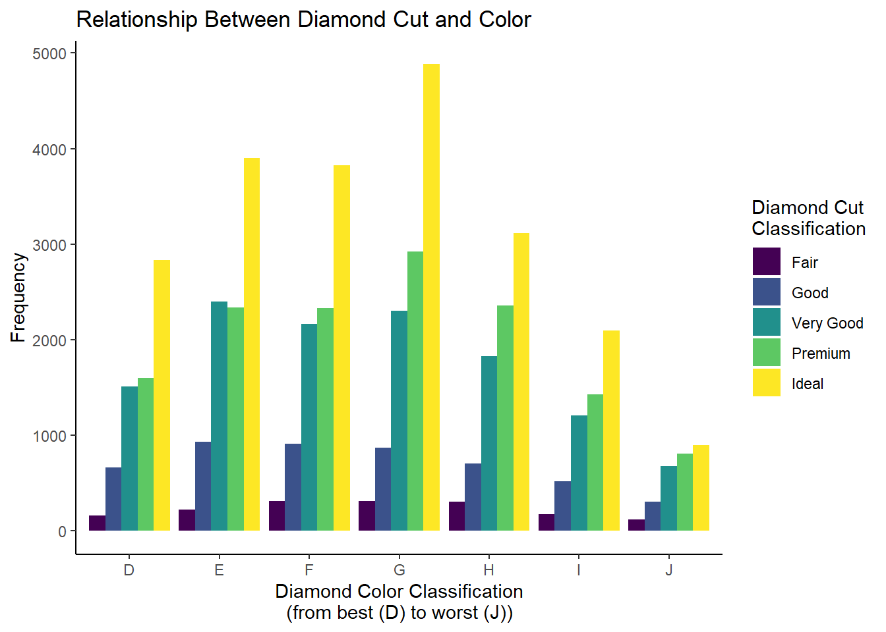
This looks pretty good! We can see that as color classification improves, there tends to be a greater proportion of premium and ideal cut diamonds compared to the worse color classifications.
As we have seen in prior chapters, we can change the color palette using scale_fill prefixed functions.
6.3.2 Creating a Stacked Bar Chart
Note, in this visualization’s interpretation, we talked about comparing the proportion across groups. If we have equal group sizes (i.e., if all of the color classifications contained the same number of diamonds), it is much easier to make these comparisons. When we don’t, it can be challenging.
This is where the stacked bar chart comes into play. To generate this visualization, we can simply change one argument within the geom_bar function:
diamonds_df |>ggplot(aes(x = color, y = n, fill = cut)) +geom_bar(stat ='identity', position =position_stack()) +labs(x ="Diamond Color Classification\n(from best (D) to worst (J))",y ="Frequency",fill ="Diamond Cut\nClassification",title ="Relationship Between Diamond Cut and Color") +theme_classic()
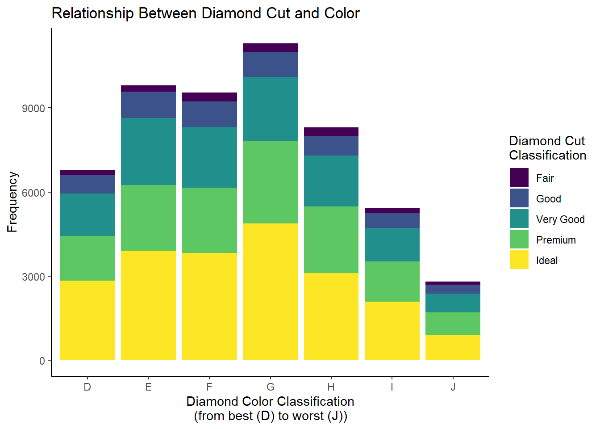
I tend to like this a little bit better! However, again, if our goal is comparing the diamond cut classifications across the levels of color classification, we are running into the issue of unequal group size. To get around this, we can convert our raw frequencies into relative frequencies (or proportions) to create what’s called a “100% stacked bar chart”:
diamonds_df |>group_by(color) |>mutate(pct = n/sum(n)) |>ggplot(aes(x = color, y = pct, fill = cut)) +geom_bar(stat ='identity', position =position_stack()) +labs(x ="Diamond Color Classification\n(from best (D) to worst (J))",y ="Proportion",fill ="Diamond Cut\nClassification",title ="Relationship Between Diamond Cut and Color") +theme_classic()
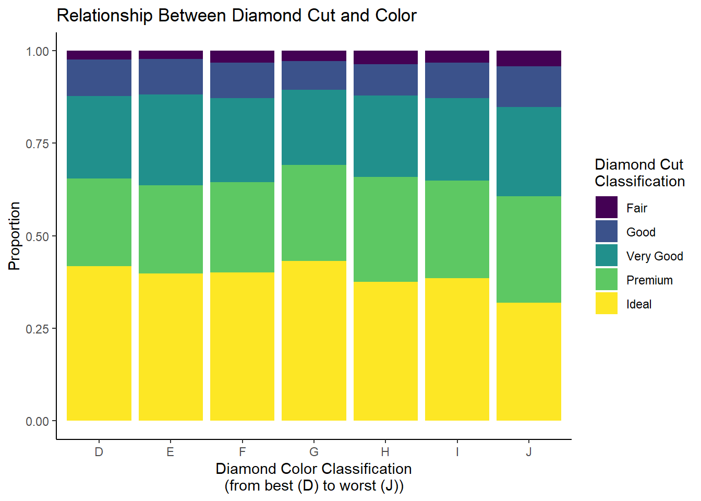
Now that we have standardized our frequencies, comparison is greatly simplified! Here, we can see that among the worst color classification (J), fair, good, and very good cut diamonds make up a slightly greater proportion of the overall diamond total compared to the better color classifications.
We have some ways we can potentially modify the above visualization. Namely:
Converting the proportions to percentages on the y-axis
Adding data labels to the bars
Let’s see how we can solve both problems:
library(viridis)diamonds_df |>group_by(color) |>mutate(pct = n/sum(n)) |>mutate(pct1 =paste(round(pct*100,2),"%",sep="")) |>ggplot(aes(x = color, y = pct, fill = cut)) +geom_bar(stat ='identity', position =position_stack()) +geom_label(aes(label = pct1),position=position_stack(vjust=0.5),color='white',size =3,fontface='bold') +labs(x ="Diamond Color Classification\n(from best (D) to worst (J))",y ="Percentage",fill ="Diamond Cut\nClassification",title ="Relationship Between Diamond Cut and Color") +theme_classic() +scale_y_continuous(labels = scales::percent) +scale_fill_viridis(option="E",discrete=T)